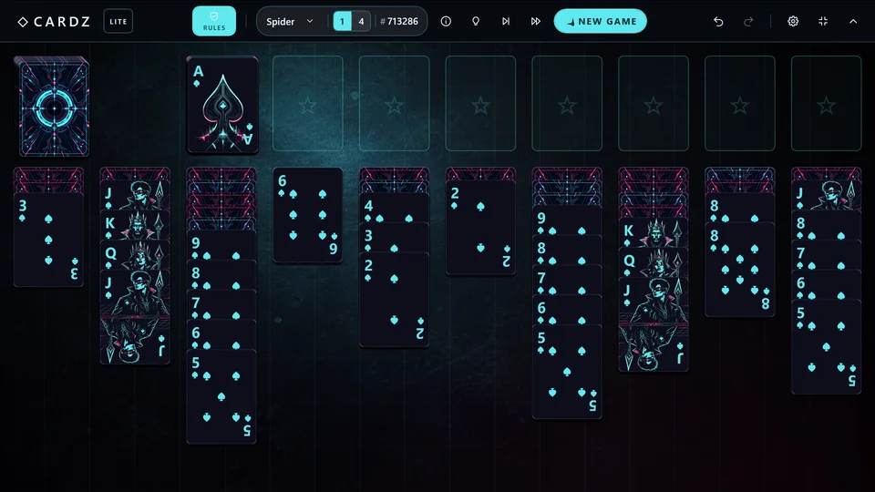
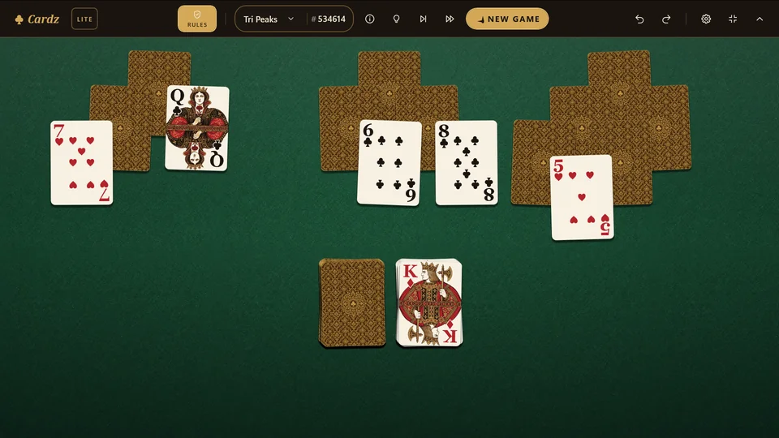

Pistas y juego automático
Una pista muestra una buena jugada, y el juego automático termina el reparto. O desactiva las reglas.
Cardz Lite
Cardz Lite es la edición gratuita de Cardz: siete solitarios y seis barajas, con pistas, puntuaciones y estadísticas.

Juegos
Klondike roba una o tres cartas, y Spider se juega con uno, dos o cuatro palos. Además, FreeCell, Yukon, Golf, Tri Peaks y Pyramid.

Parejas que suman trece
Baraja Scarab
1, 2 y 4 palos · Ocho escaleras perfectas
Baraja Neon
Todas las cartas a la vista
Baraja Monosolid
Despeja las tres cumbres
Baraja Felt House
Mueve colas enteras de una vez
Baraja para daltónicos
A un valor de distancia
Baraja ScarabUna pista muestra una buena jugada, y el juego automático termina el reparto. O desactiva las reglas.
Repartos, victorias, derrotas y rachas de cada juego. Klondike, Spider, Golf, Tri Peaks y Pyramid puntúan cada reparto.
Felt House, Scarab, Neon y Monosolid, además de una baraja de alto contraste y otra apta para daltónicos.
La partida sigue ahí cuando vuelves, y deshacer también. Vuelve a jugar cualquier reparto por su número.
Juego completo con el teclado, narración para lectores de pantalla, movimiento reducido y una mesa reflejada para zurdos.
La aplicación completa